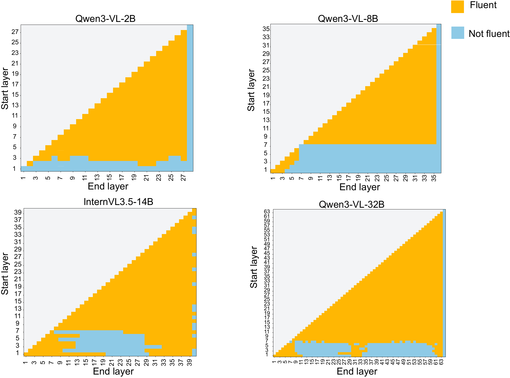
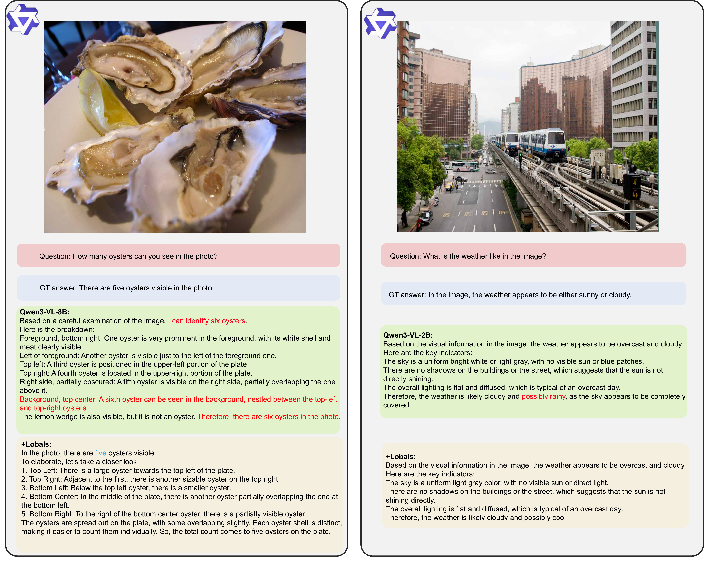

Many vision-language models do not literally fail to see an image; during the later part of decoding, they gradually shift attention from visual tokens toward language output. The result can be a wrong count, an unsupported inference such as “it may be raining,” or a fluent answer that is no longer grounded in the image. Test-Time Latent Computation to Improve Visual Perception in Multimodal Large Language Models asks whether we can make the model compute again in a visually relevant hidden-state region at test time, without training new parameters or adding external tools.
This post reads Test-Time Latent Computation to Improve Visual Perception in Multimodal Large Language Models by Chen Yang, Zheng Fang, Wenqi Fan, and Jun Xia (arXiv v1, 23 Nov 2026). The paper proposes the training-free Lobals (Look Back in the Latent Space) decoder and releases implementation code.
1. Topic: why visual understanding may need a second look
An MLLM encodes an image into visual tokens, combines them with text tokens, and processes the sequence through Transformer layers before producing an answer. Shallow layers tend to aggregate visual information, middle layers perform cross-modal integration, and deeper layers become increasingly output-oriented. If the model relies on language patterns too early, a fluent answer may drift away from the image.
This is especially visible in counting, spatial relations, fine-grained recognition, and visual hallucination. Test-time scaling need not only generate a longer reasoning trace. It can also add computation in latent space: preserve the current semantic state, re-run a layer window that is strongly interacting with the image, and then continue decoding.
2. Related work: from token reasoning to latent computation
| Direction | Main idea | Relation to Lobals |
|---|---|---|
| Layer-wise representation analysis | Study how semantics and predictions emerge with depth | Motivates treating layers as functionally non-uniform |
| Trained recurrent computation | Add effective depth through shared or looped Transformer blocks | Lobals adds latent computation without parameter updates or training |
| Training-free depth adaptation | Skip or repeat contiguous blocks in a frozen model | Lobals places repetition in the visually grounded window |
| Visual-hallucination mitigation | Amplify visual tokens or use contrastive decoding | Lobals reopens a visual-interaction region instead of editing attention weights |
The distinction is therefore not simply “repeat some layers.” Lobals first identifies a stable reusable band that does not disrupt normal language generation, then selects a window inside it from visual-token attention at every decoding step.
3. Research questions: what does the paper test?
Our reading organizes the questions as follows:
- Do MLLMs contain contiguous layer regions that can be safely re-forwarded, and how can their boundaries be found?
- Is selecting a window by visual-token attention more reliable than fixed or random repetition?
- Can this extra latent computation improve general multimodal understanding, hallucination mitigation, and vision-centric tasks together?
- Is the gain worth the latency, and how sensitive is it to the window length?
4. Method: from stable layers to Lobals decoding

Step 1: find a reusable band with fluency checks
The authors use 500 COCO images and the prompt “Describe the image” on Qwen3-VL-2B/8B/32B and InternVL3.5-14B. For each candidate range, they feed a hidden state after one layer back into an earlier start layer, re-run a contiguous block, and resume normal decoding. Repetition, garbling, or other non-fluent output on any sample marks that range as disruptive.
The resulting stable regions are [4, 27] for Qwen3-VL-2B, [8, 35] for Qwen3-VL-8B, [8, 63] for Qwen3-VL-32B, and [8, 39] for InternVL3.5-14B. The start usually coincides with the first attention-sink layer, while the endpoint is the penultimate layer; the final layer is more directly tied to logits and is easier to perturb.

For Qwen3-VL-8B, re-forwarding inside the stable region produces an average hidden-state cosine similarity of 0.996. Repeating layer 7 drops it to 0.671, and repeating the early [1, 6] region drops it to 0.277. This supports the interpretation of middle-to-late layers as progressive refinement, but it does not prove that they carry only visual reasoning.
Step 2: measure visual attention at each decoding step
Let the reusable band be (mathcal{R}=[s,e]), the current decoding step be (t), the visual-token positions be (mathcal{V}), and the number of heads be (H). The visual-token attention ratio is
It is the average fraction of attention assigned to visual evidence at layer (ell). Given a window length (k), Lobals enumerates contiguous windows in (mathcal{R}) and selects
The selection happens at every generation step, so different output tokens can revisit different layer windows for the same image.
Step 3: feed the endpoint state back into the selected window
The normal path runs from (s) through (e), then enters the final output layers. Lobals first completes this normal pass and obtains (mathbf h_t^{(e)}), feeds it back into the selected window (W_t^*=[a_t,b_t]), re-runs those layers, and passes the refined state to the layers after (e). It changes neither weights nor external tools.
Implementation-wise, the next step still uses the KV cache created by the normal forward pass. The revisit only refines the hidden state used for the current token prediction and does not write new keys or values into the persistent cache, preserving standard autoregressive decoding consistency.
5. Experiments and results: where do the gains come from, and what do they cost?
Main experiment: three open-weight MLLMs and six multimodal benchmarks
The authors evaluate Qwen3-VL-2B, Qwen3-VL-8B, and InternVL3.5-14B, comparing Base, VCD, PAI, VAF, and Lobals. The benchmarks cover general understanding (RealWorldQA, MMStar, MME), hallucination (POPE, MMHal-Bench), and vision-centric understanding (MMVP). Experiments use temperature 0 and top-p 1.0 on NVIDIA H200 GPUs; the average normalizes MME by 2800 and MMHal-Bench by 6.
| Model | Method | RealWorldQA | MMStar | MME | POPE | MMHal | MMVP | Average |
|---|---|---|---|---|---|---|---|---|
| Qwen3-VL-2B | Base | 63.92 | 53.46 | 2019.80 | 89.96 | 3.58 | 44.21% | 68.47 |
| Lobals | 64.71 | 54.64 | 2032.10 | 89.97 | 3.93 | 35.53% | 70.29 | |
| Qwen3-VL-8B | Base | 69.02 | 63.59 | 2368.80 | 88.90 | 4.53 | 30.53% | 76.77 |
| Lobals | 69.93 | 64.22 | 2409.30 | 89.26 | 4.62 | 29.47% | 78.13 | |
| InternVL3.5-14B | Base | 69.02 | 67.03 | 2379.20 | 85.88 | 4.25 | 23.96% | 76.40 |
| Lobals | 69.93 | 67.09 | 2389.40 | 85.99 | 4.30 | 21.88% | 76.78 |
MMHal values in the table are normalized scores; percentage-valued columns follow each benchmark's definition. POPE and MMVP are higher-is-better, while MMHal's hallucination rate is lower-is-better. Lobals obtains the best or tied-best average on all three backbones and does not report a decline against the corresponding Base on every metric. Yet it does not improve every individual task: Qwen3-VL-2B's MMVP falls from 44.21% to 35.53%. The precise claim is therefore more stable and competitive overall, not monotonic improvement everywhere.
Mechanism ablation: extra computation helps, but visual grounding is steadier
On POPE with Qwen3-VL-8B, the authors compare fixed start, middle, end, random, and visually grounded windows:
| Selection | Accuracy | F1 |
|---|---|---|
| Start | 89.08 | 88.44 |
| Middle | 89.01 | 88.45 |
| End | 88.26 | 87.32 |
| Random | 89.17 | 88.63 |
| Visually grounded (Lobals) | 89.26 | 88.75 |
Across nine settings spanning three models and three benchmarks, Lobals beats random selection in 8 and never falls below the corresponding Base; random selection hurts Qwen3-VL-2B on RealWorldQA and POPE. Re-forwarding within the stable band may create the opportunity, but allocating the extra computation by visual evidence is more reliable.
Cases and attention analysis: how revisit can reduce visual hallucination

In the oyster case, Qwen3-VL-8B counts six while Lobals counts five and explains the positions of the visible oysters. In the weather case, Qwen3-VL-2B adds “possibly rainy” beyond “cloudy,” whereas Lobals stays closer to visible evidence. These are qualitative examples, not an additional aggregate success rate.
The attention analysis provides a mechanism-consistent clue: inside the Qwen3-VL-8B revisit window R13–R21, average first-token attention falls to 15.6%, while visual-token attention rises to 51.7%. The authors explicitly note that attention is not a causal measure of visual grounding, so this remains correlational evidence.
Efficiency and window length: the gain has a real compute cost
Qwen3-VL-8B has 36 layers and uses (k=9) in the main experiments. Because each token receives (k+1) additional layer evaluations, layer-level computation is approximately ((36+10)/36\approx1.28) times standard decoding. On an H200, end-to-end MMHal-Bench latency rises from 2.53 s to 4.30 s (1.70×), while output throughput falls from 40.08 to 25.56 token/s, retaining 63.8% of baseline throughput. Longer is not always better: Qwen3-VL-2B performs best at (k=3), Qwen3-VL-8B at (k=9), so the optimum is model-dependent.
6. Our reflections
Topic reflection: what is this field studying?
This work belongs to test-time compute scaling: parameters remain fixed, but the inference path reallocates computation for each input. It turns “think longer” into local recomputation of hidden states and connects visual understanding to the functional organization of Transformer depth. More broadly, the field is moving from asking whether a capability exists to asking where limited computation should be spent for each example.
Limitation reflection: what remains unresolved?
First, visual-attention ratio is a heuristic and may not equal the evidence the model truly relies on; the selected window may be suboptimal. Second, the reusable-band start depends on attention sinks, which future architectures may weaken or remove. Third, the main study covers only three open-weight backbones, and both the stable band and (k) are model-specific. Fourth, average gains are often modest while latency increases by 1.70×; for language-heavy tasks or long outputs, the trade-off must be recomputed.
Solution reflection: where could evaluation go next?
Window selection could combine gradients, occlusion tests, causal interventions, and multiple signals to test whether “visual relevance” actually causes better answers. Stable regions could be calibrated jointly from fluency, hidden-state similarity, and output consistency on new models. Experiments should include more architectures and visual encoders, and report per-example gain distributions rather than only means. Finally, an adaptive policy could decide whether to revisit and how long to revisit based on token difficulty, then plot accuracy–hallucination–latency Pareto curves.
One-sentence takeaway: Lobals does not make an MLLM produce a longer textual chain; it sends the hidden state back through the window that is most visually engaged and computes it once more. The result is a stable but not universal improvement across benchmarks, with a controllable yet real latency cost.
References: arXiv paper, HTML full text, official code.